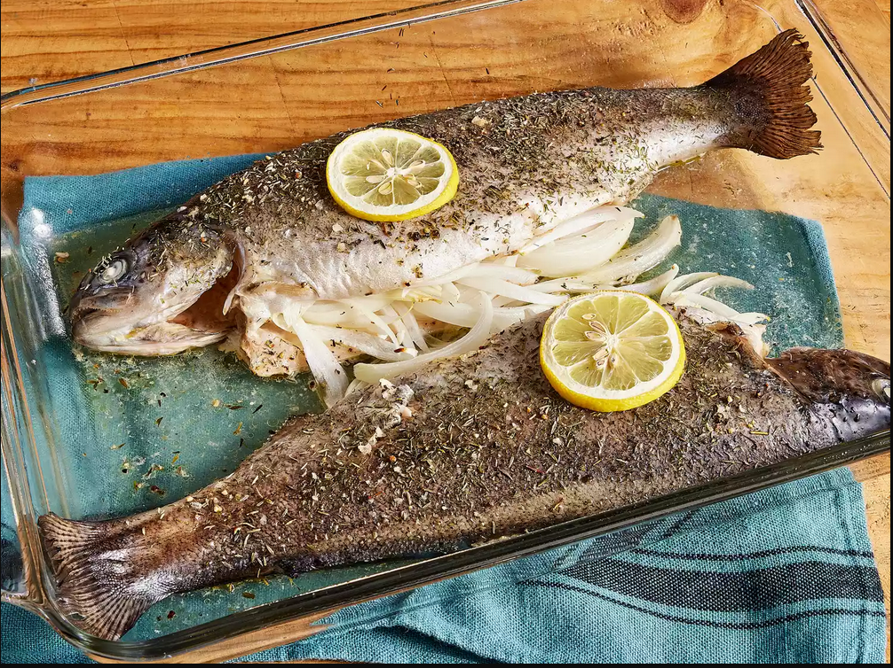

Baked Fresh Rainbow Trout

Description
This rainbow trout recipe is very easy and tasty. Buy whole, gutted fish with heads and tails still on from the supermarket; make sure to choose very fresh trout. The key is to add water to the dish as instructed in the directions, which keeps the fish from drying out; add hot water as cold water can crack the baking dish. Serve with rice and veggies. It's light and delicious, but be careful of bones!
Ingedients
- 2 teaspoons olive oil
- 2 whole rainbow trout, gutted and cleaned, heads and tails still on
- 1/4 teaspoon dried dill
- 1/4 teaspoon dried thyme
- salt to taste
- 1/2 large onion, sliced
- 2 thin slices lemon
- 2 tablespoons hot water
- ground black pepper to taste
Steps
- Preheat the oven to 200 degrees C. Grease a 9x13 inch baking dish with 1 teaspoon olive oil.
- Place trout in the prepared baking dish and coat with remaining olive oil.
- Season inside and outside of fish with dill, thyme and salt. Stuff each fish with onion slices; grind pepper on top. Place 1 lemon slice on each fish.
- Bake in the preheated oven for 10 minutes; add hot water to dish. Continue baking until fish flakes easily with a fork, about 10 minutes more.
- Serve hot and enjoy!